NOTE: Had Claude help me out here getting this loaded in from google sheets.
NOTE: The data I have loaded in here is what I have available so far from my various public records requests. It is incomplete so we’ll work with what we’ve got so far. There are a few areas of the data that I am working to clean up because the Python script I built didn’t perfectly handle every school’s data. As of Nov. 23, I have data for 11 of the Big Ten schools and I have cleaned the mistakes the Python script made in each of those 11 sets. The schools I don’t have data for will show up blank in the charts for now.
# Authenticate (if needed)gs4_auth()
! Using an auto-discovered, cached token.
To suppress this message, modify your code or options to clearly consent to
the use of a cached token.
See gargle's "Non-interactive auth" vignette for more details:
ℹ The googlesheets4 package is using a cached token for 'mdcohen99@gmail.com'.
# Get the sheet URL or IDsheet_url <-"https://docs.google.com/spreadsheets/d/1s3e5prTQ28TBbMQYKF4XTbaN2qLCvEkxNM8oUZhahjI/edit?usp=sharing"# Get all sheet namessheet_names <-sheet_names(sheet_url)# Load all sheets into a named listall_sheets <-lapply(sheet_names, function(x) {read_sheet(sheet_url, sheet = x)})
✔ Reading from "Big Ten Budgets".
✔ Range ''Illinois''.
✔ Reading from "Big Ten Budgets".
✔ Range ''Purdue''.
✔ Reading from "Big Ten Budgets".
✔ Range ''Indiana''.
✔ Reading from "Big Ten Budgets".
✔ Range ''Iowa''.
✔ Reading from "Big Ten Budgets".
✔ Range ''Maryland''.
✔ Reading from "Big Ten Budgets".
✔ Range ''Michigan''.
✔ Reading from "Big Ten Budgets".
✔ Range ''Michigan State''.
✔ Reading from "Big Ten Budgets".
✔ Range ''Minnesota''.
✔ Reading from "Big Ten Budgets".
✔ Range ''Nebraska''.
✔ Reading from "Big Ten Budgets".
✔ Range ''Ohio State''.
✔ Reading from "Big Ten Budgets".
✔ Range ''Oregon''.
✔ Reading from "Big Ten Budgets".
✔ Range ''Penn State''.
✔ Reading from "Big Ten Budgets".
✔ Range ''Rutgers''.
✔ Reading from "Big Ten Budgets".
✔ Range ''UCLA''.
✔ Reading from "Big Ten Budgets".
✔ Range ''USC''.
✔ Reading from "Big Ten Budgets".
✔ Range ''Washington''.
✔ Reading from "Big Ten Budgets".
✔ Range ''Wisconsin''.
names(all_sheets) <- sheet_names# Access individual sheets like:# all_sheets$Wisconsin# all_sheets$`Penn State`# Extract from your existing list into separate dataframeslist2env(all_sheets, envir = .GlobalEnv)
When Maryland athletic director Jim Smith announced that Mike Locksley would be returning as football coach, it came with an assurance that Maryland would increase its funding and investment in football going forward.
Since Maryland joined the Big Ten, it has been one of the league’s more mediocre football programs, and one of its worst in terms of financial backing.
But how far, exactly, is Maryland lagging behind? Quite a lot, actually.
A review of the last five years worth of NCAA budget reports from Big Ten institutions, acquired by Cohen News Service through a public records request, Maryland is near the bottom of the league in several important categories that dictate football financial success.
Upon his visit to the esteemed Shirley Povich Center for Sports Journalism earlier this fall, Yahoo Sports reporter Ross Dellenger said that he looks at sponsorship dollars, ticket sales and media rights money when he gets budget reports for college football programs. Maryland doesn’t receive media rights checks as of the most recent budget report based on its status as a newer member of the league. But much of the money Maryland wasn’t getting the the Big Ten’s TV deals, the Big Ten paid Maryland directly.
But it’s ticket sales and sponsorship revenues are low. As Dellenger said, those will be areas Maryland must focus to improve if it plans to compete in the Big Ten with Locksley or any coach after him.
#First: Sponsorship dollars
Bringing in sponsorship dollars is also dependent on having a top product. Maryland hasn’t been winning enough football games to warrant bigger companies — other than its built in partnership with Under Armour. Unsurprisingly, the Big Ten’s best football programs also bring in the largest total of sponsorship revenue during the period of the dataset.
Dellenger suggested a school can try to find raises in sponsorship dollars to lead to bringing in better players and thus improving the play on the field. In essence, putting the sponsorship ahead of winning instead of vice versa. To help fund revenue sharing payments, Dellenger said he expects to see major increases in the reported sponsor revenues in these budget reports. That data, however, will likely not truly appear until the 2026 fiscal year reports.
b1gwide |>select(school, year, royalties_and_sponsorships) |>group_by(school) |>summarize(total_sponsorship =sum(royalties_and_sponsorships, na.rm =TRUE) ) |>ggplot() +geom_col(aes(x =reorder(school, total_sponsorship), y = total_sponsorship)) +geom_col(data =filter(b1gwide, school =="Maryland") |>select(school, year, royalties_and_sponsorships) |>group_by(school) |>summarize(total_sponsorship =sum(royalties_and_sponsorships, na.rm =TRUE) ),aes(x = school, y = total_sponsorship), fill ="red") +scale_y_continuous(labels = scales::label_dollar()) +coord_flip() +labs(title ="Terps sponsorhip best Big Ten bottom feeders,\n lags behind elite FB schools",subtitle ="Note: only currently returned public record requests are included in this data. Those schools\nare Indiana, Maryland, Michigan, Michigan State, Ohio State, Oregon, Penn State,\n Nebraska, Purdue, Illinois, Rutgers",x ="",y ="Total Royalties and Sponsorships") +theme_minimal() +theme(legend.position ="none",text =element_text(family ="poppins"),plot.title =element_text(size =12, face ="bold"),plot.subtitle =element_text(size =9),axis.title =element_text(size =10),axis.text =element_text(size =8) )
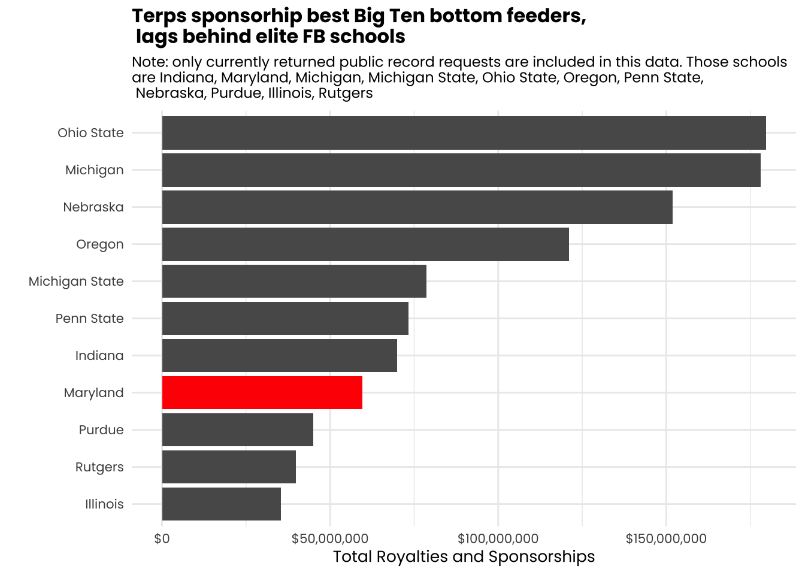
Though Maryland’s total sponsorship dollars are among the worst of the Big Ten schools included, it is improving at a strong rate.
b1gwide |>select(school, year, royalties_and_sponsorships) |>mutate(color_group =ifelse(school =="Maryland", "Maryland", "Other")) |>ggplot(aes(x =factor(year), y = royalties_and_sponsorships, group = school, color = color_group)) +geom_line(data =function(x) filter(x, school !="Maryland"), linewidth =1, alpha =0.7) +geom_line(data =function(x) filter(x, school =="Maryland"), linewidth =1.5) +scale_color_manual(values =c("Maryland"="red", "Other"="gray70")) +scale_y_continuous(labels = scales::label_dollar()) +labs(title ="Maryland's sponorship revenue is low, but it is growing",subtitle ="Other Big Ten schools have seen far more sponsorship fluctuation,\n especially during the pandemic, than Maryland.",x ="",y ="Ticket sales revenue") +theme_minimal() +theme(legend.position ="none",text =element_text(family ="poppins"),plot.title =element_text(size =12, face ="bold"),plot.subtitle =element_text(size =10),axis.title =element_text(size =10),axis.text =element_text(size =8)) +facet_wrap(~school)
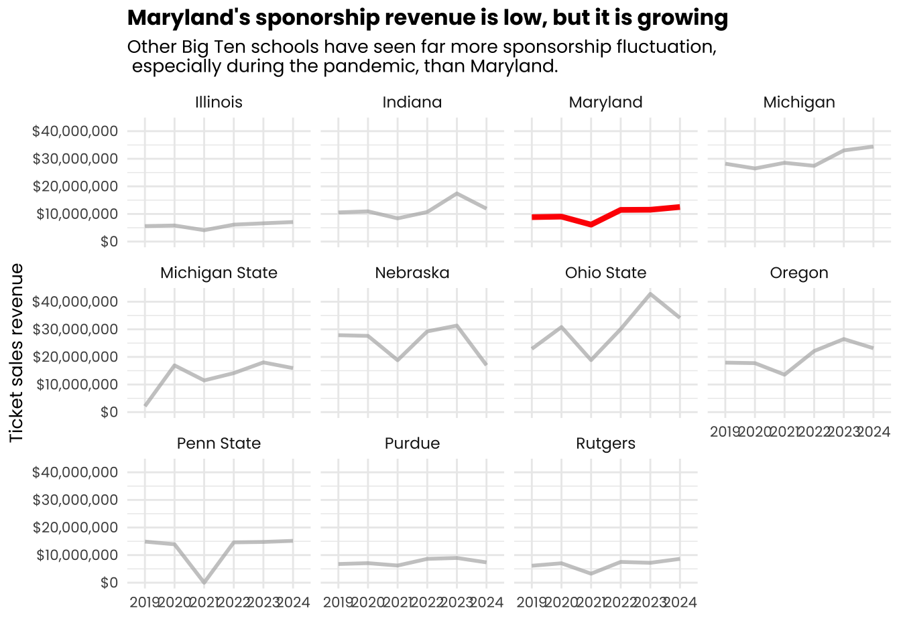
b1gbudgets |>filter(category =="Royalties and sponsorships") |>mutate(pct_change = ((x2024 - x2019) / x2019) *100) |>ggplot() +geom_col(aes(x =reorder(school, pct_change), y = pct_change, fill = pct_change >0)) +coord_flip() +scale_fill_manual(values =c("TRUE"="darkgreen", "FALSE"="darkred"), guide ="none") +scale_y_continuous(labels = scales::label_percent(accuracy =1)) +labs(title ="And Maryland's sponsorship growth is outpacing other\n Big Ten football powers",subtitle ="Note: only currently returned public record requests are included in this data. Those schools\nare Indiana, Maryland, Michigan, Michigan State, Ohio State, Oregon, Penn State,\n Nebraska, Purdue, Illinois, Rutgers",x ="",y ="Percent Change in Royalties and Sponsorships (FY2019-2024)") +theme_minimal() +theme(legend.position ="none",text =element_text(family ="poppins"),plot.title =element_text(size =12, face ="bold"),plot.subtitle =element_text(size =9),axis.title =element_text(size =10),axis.text =element_text(size =8))
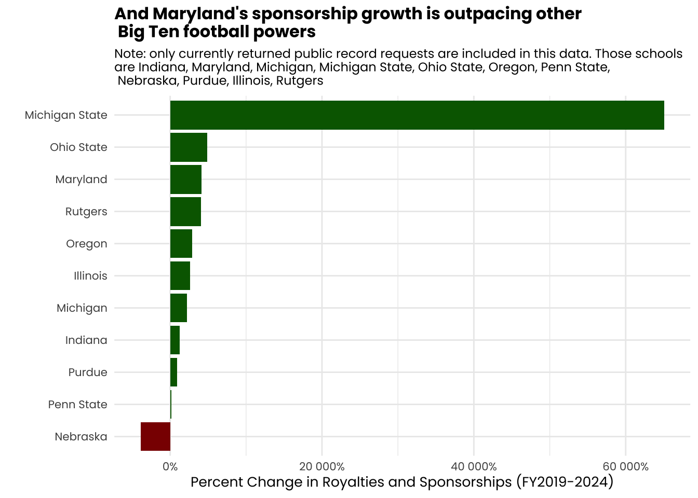
Of the 11 schools which returned records to the Cohen News Service request, Maryland earned the fourth smallest revenue from sponsorship. Expectedly, the Big Ten’s best programs are the top of the list.
Maryland, however, is among the better programs in terms of growing its revenue in this category. Only Michigan State and Ohio State have seen more growth in their sponsorship revenue from the 2019 fiscal year through 2024. Michigan State has seen a massive spike in its growth, with an increase of more than 650% since 2019. It hasn’t resulted in Michigan State’s football program improving, but may be setting it up well for the revenue sharing era (which will not show in these reports).
#Second: Ticket Sales
Maryland is frequently criticized for low attendance at football games. But how bad is it, really.
Well, it’s pretty bad.
Over the course of this data set, Maryland’s ticket sales revenue is up just 9%, since the 2019 football season. Ticket revenue from the 2020 COVID-19 impacted football season is excluded throughout this section because some schools sold tickets and others didn’t based on their recklessness about pandemic safety. Doesn’t seem fair to knock Maryland for trying not to kill people.
maryland_wide |>select(school, year, ticket_sales) |>filter(year !="2021") |>ggplot() +geom_col(aes(x =factor(year), y = ticket_sales), fill ="red") +scale_y_continuous(labels = scales::label_dollar()) +labs(title ="Maryland ticket sales up in 2024, but largely unchanged since 2019",subtitle ="Note: This chart does not include data from the 2020 season due to no tickets being sold\n as a result of the COVID-19 pandemic.",x ="",y ="Ticket sales revenue") +theme_minimal() +theme(legend.position ="none",text =element_text(family ="poppins"),plot.title =element_text(size =12, face ="bold"),plot.subtitle =element_text(size =10),axis.title =element_text(size =10),axis.text =element_text(size =8))
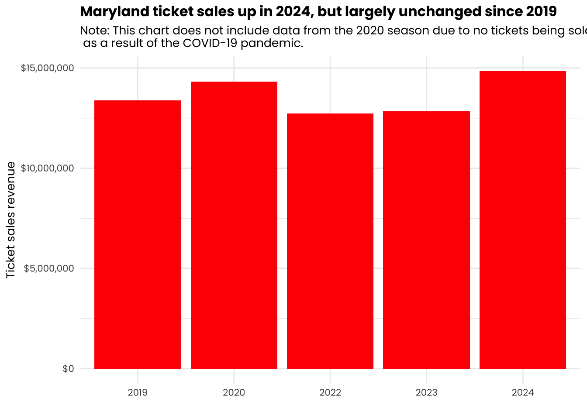
But how does Maryland’s revenue on tickets compare to the rest of the conference?
b1gwide |>filter(year !=2021) |>select(school, year, ticket_sales) |>group_by(school) |>summarize(total_ticket_sales =sum(ticket_sales, na.rm =TRUE) ) |>ggplot() +geom_col(aes(x =reorder(school, total_ticket_sales), y = total_ticket_sales)) +geom_col(data =filter(b1gwide, school =="Maryland"& year !=2021) |>select(school, year, ticket_sales) |>group_by(school) |>summarize(total_ticket_sales =sum(ticket_sales, na.rm =TRUE) ),aes(x = school, y = total_ticket_sales), fill ="red") +scale_y_continuous(labels = scales::label_dollar()) +coord_flip() +labs(title ="Maryland's ticket sales revenue among Big Ten's lowest",subtitle ="Note: only currently returned public record requests are included in this data. Those schools\nare Indiana, Maryland, Michigan, Michigan State, Ohio State, Oregon, Penn State,\n Nebraska, Purdue, Illinois, Rutgers",x ="",y ="Total Ticket Sales (excluding the 2020 season)") +theme_minimal() +theme(legend.position ="none",text =element_text(family ="poppins"),plot.title =element_text(size =12, face ="bold"),plot.subtitle =element_text(size =9),axis.title =element_text(size =10),axis.text =element_text(size =8) )
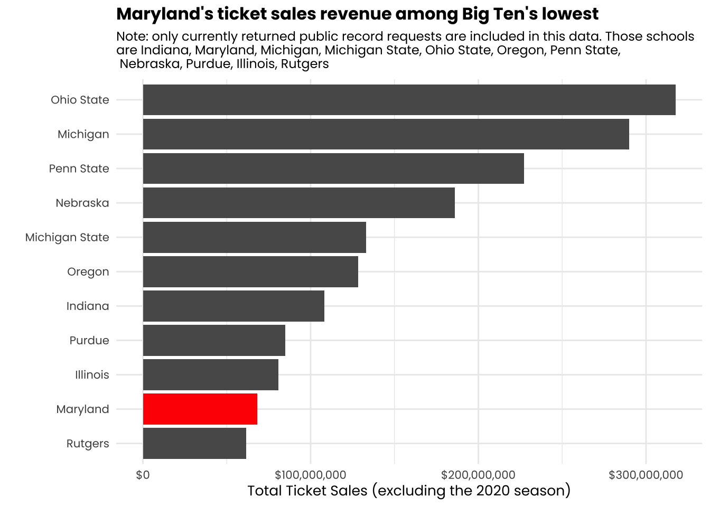
Only Rutgers has a smaller revenue total than Maryland for ticket sales over this period. That’s not ideal.
And how is its growth going compared to the rest of the league?
b1gwide |>select(school, year, ticket_sales) |>filter(year !="2021") |>mutate(color_group =ifelse(school =="Maryland", "Maryland", "Other")) |>ggplot(aes(x =factor(year), y = ticket_sales, group = school, color = color_group)) +geom_line(data =function(x) filter(x, school !="Maryland"), linewidth =1, alpha =0.7) +geom_line(data =function(x) filter(x, school =="Maryland"), linewidth =1.5) +scale_color_manual(values =c("Maryland"="red", "Other"="gray70")) +scale_y_continuous(labels = scales::label_dollar()) +labs(title ="Compared to other Big Ten schools, Maryland's ticket sales\n growth is fairly flat",subtitle ="Note: This chart does not include data from the 2020 season due to no tickets being sold\n as a result of the COVID-19 pandemic.",x ="",y ="Ticket sales revenue") +theme_minimal() +theme(legend.position ="none",text =element_text(family ="poppins"),plot.title =element_text(size =12, face ="bold"),plot.subtitle =element_text(size =10),axis.title =element_text(size =10),axis.text =element_text(size =8)) +facet_wrap(~school)
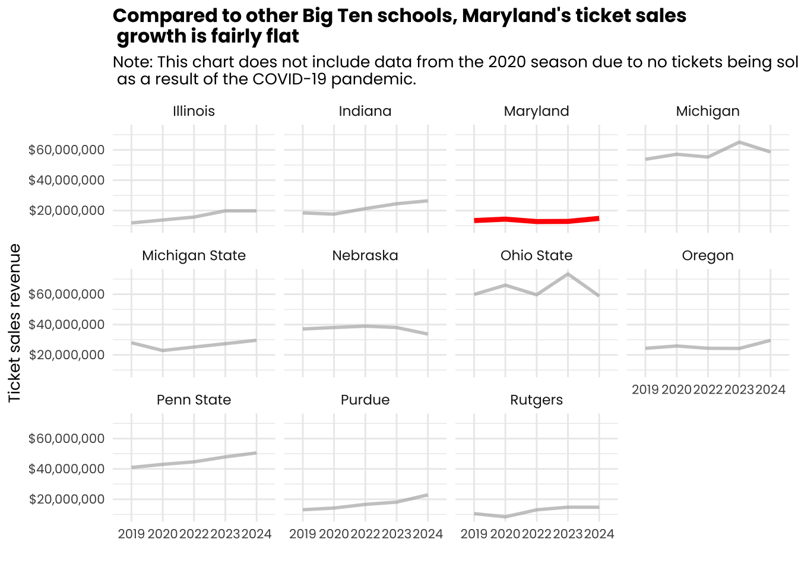
b1gbudgets |>filter(category =="Ticket sales") |>mutate(pct_change = ((x2024 - x2019) / x2019) *100) |>ggplot() +geom_col(aes(x =reorder(school, pct_change), y = pct_change, fill = pct_change >0)) +coord_flip() +scale_fill_manual(values =c("TRUE"="darkgreen", "FALSE"="darkred"), guide ="none") +scale_y_continuous(labels = scales::label_percent(accuracy =1)) +labs(title ="But Maryland is growing its sales as a better rate\n than Ohio State and Michigan.",subtitle ="Note: only currently returned public record requests are included in this data. Those schools\nare Indiana, Maryland, Michigan, Michigan State, Ohio State, Oregon, Penn State,\n Nebraska, Purdue, Illinois, Rutgers",x ="",y ="Percent Change in Ticket Sales (FY2019-2024)") +theme_minimal() +theme(legend.position ="none",text =element_text(family ="poppins"),plot.title =element_text(size =12, face ="bold"),plot.subtitle =element_text(size =9),axis.title =element_text(size =10),axis.text =element_text(size =8))
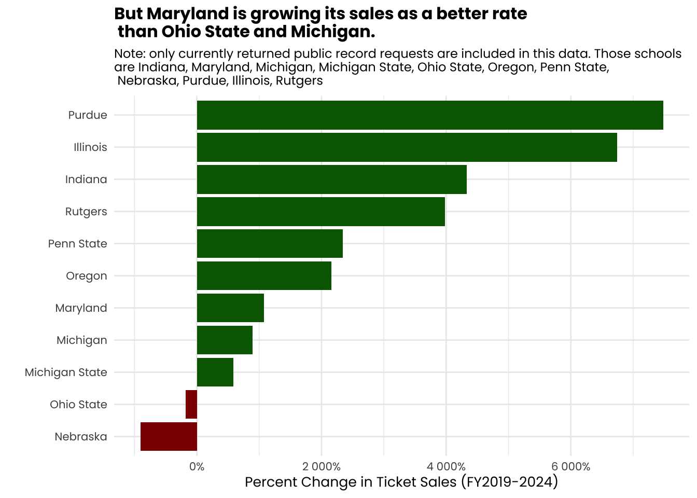
So Maryland lags behind here in revenue. There are a few reasons for this. In part, tickets aren’t expensive. But that’s also a supply and demand issue. Maryland’s stadium is smaller than much of the Big Ten, but the demand isn’t particularly high unless a school like Michigan with a large local alumni base is in town.
But it isn’t just an issue of Maryland having a smaller stadium because other teams with similar sized stadiums have much better revenue numbers. And, compared to other Big Ten programs, Maryland has also played fewer home games over the life of this data.
total_home_games <-tibble(school =c("Indiana", "Maryland", "Michigan", "Michigan State", "Ohio State", "Oregon", "Penn State", "Nebraska", "Purdue", "Illinois", "Rutgers"),n_home_games =c(35, 35, 39, 37, 38, 36, 40, 37, 37, 37, 38))total_tickets <- b1gwide |>filter(year !=2021) |>select(school, year, ticket_sales) |>group_by(school) |>summarize(total_ticket_sales =sum(ticket_sales, na.rm =TRUE) )total_tickets <- total_tickets |>left_join(total_home_games, by ="school") |>mutate(avg_ticket_per_game = total_ticket_sales / n_home_games)ggplot() +geom_point(data = total_tickets, aes(x = n_home_games, y = avg_ticket_per_game)) +geom_text_repel(data = total_tickets,aes(x = n_home_games, y = avg_ticket_per_game, label = school), family ="poppins", size =3) +scale_y_continuous(labels = scales::label_dollar()) +labs(title ="Maryland behind in football ticket revenue... \nand having home games at all",subtitle ="Note: only currently returned public record requests are included in this data. Those schools\nare Indiana, Maryland, Michigan, Michigan State, Ohio State, Oregon, Penn State,\n Nebraska, Purdue, Illinois, Rutgers",x ="Total Home Games Played (FY2019-2024, excluding 2020 season)",y ="Total Ticket Sales (excluding the 2020 season)") +theme_minimal() +theme(legend.position ="none",text =element_text(family ="poppins"),plot.title =element_text(size =12, face ="bold"),plot.subtitle =element_text(size =9),axis.title =element_text(size =10),axis.text =element_text(size =8))
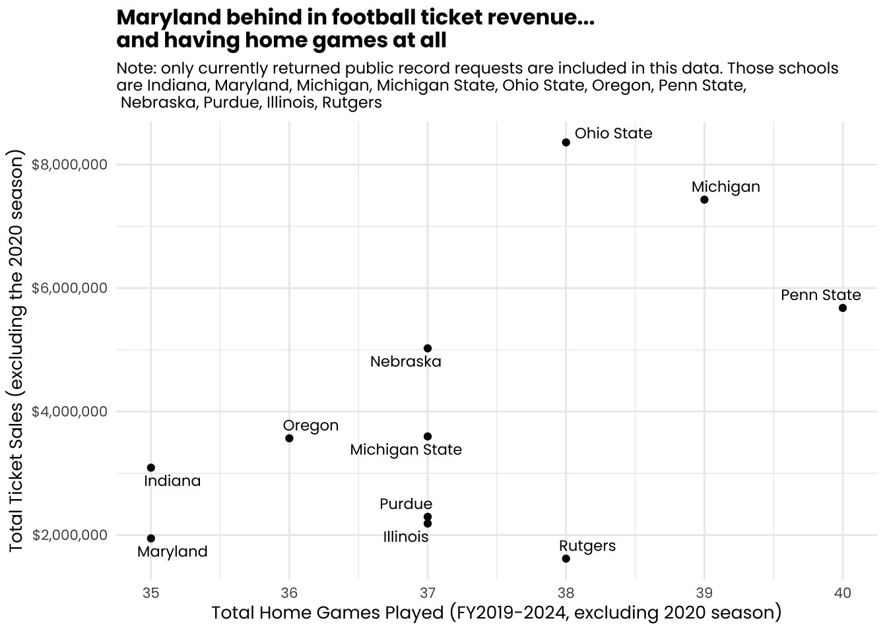
Maryland’s ticket sales have other problems, too. Maryland’s stadium is the third smallest in the Big Ten. That, of course, puts a cap on Maryland’s possible ticket revenue. And in that smaller stadium, Maryland still has the second lowest utilization rate of its seats among the schools with available data in this story. Some schools with smaller stadiums, like Purdue, fill up their seats at a much higher rate.
And adjusted for the utilization rate of the Big Ten stadiums from schools in this data set, Maryland has the third lowest revenue per seat.
ticket_revenue <- b1gwide |>filter(year !=2021) |>select(school, year, ticket_sales) |>group_by(school) |>summarize(total_ticket_sales =sum(ticket_sales, na.rm =TRUE) ) attendance <-tibble(school =c("Illinois", "Indiana", "Maryland", "Michigan", "Michigan State", "Nebraska", "Ohio State", "Oregon", "Penn State", "Purdue", "Rutgers"),five_year_average =c(40166, 44126, 36345, 110235, 69959, 87599, 102108, 53384, 106750, 55370, 42504),stadium_capacity =c(60670, 52626, 51802, 107601, 74866, 85485, 102780, 54000, 106572, 57236, 52454),n_home_games =c(37, 35, 35, 39, 37, 37, 38, 36, 40, 37, 38))attendance <- attendance |>left_join(ticket_revenue, by ="school") |>rename(total_revenue = total_ticket_sales ) attendance <- attendance |>mutate(revenue_per_seat = total_revenue / stadium_capacity, utilization_rate = five_year_average / (stadium_capacity * n_home_games),revenue_per_attendee = total_revenue / five_year_average,utilization_adjusted_revenue = revenue_per_seat * utilization_rate )ggplot(data = attendance, aes(x =reorder(school, utilization_adjusted_revenue), y = utilization_adjusted_revenue)) +geom_col() +geom_col(data =filter(attendance, school =="Maryland"), aes(x = school, y = utilization_adjusted_revenue), fill ="red") +scale_y_continuous(labels = scales::label_dollar()) +coord_flip() +labs(title ="Adjusted for utilization, Maryland still near bottom of Big Ten ticket\n revenue per seat",subtitle ="Note: only currently returned public record requests are included in this data. Those schools\nare Indiana, Maryland, Michigan, Michigan State, Ohio State, Oregon, Penn State,\n Nebraska, Purdue, Illinois, Rutgers",x ="",y ="Utilization-adjusted revenue per seat") +theme_minimal() +theme(legend.position ="none",text =element_text(family ="poppins"),plot.title =element_text(size =12, face ="bold"),plot.subtitle =element_text(size =9),axis.title =element_text(size =10),axis.text =element_text(size =8))
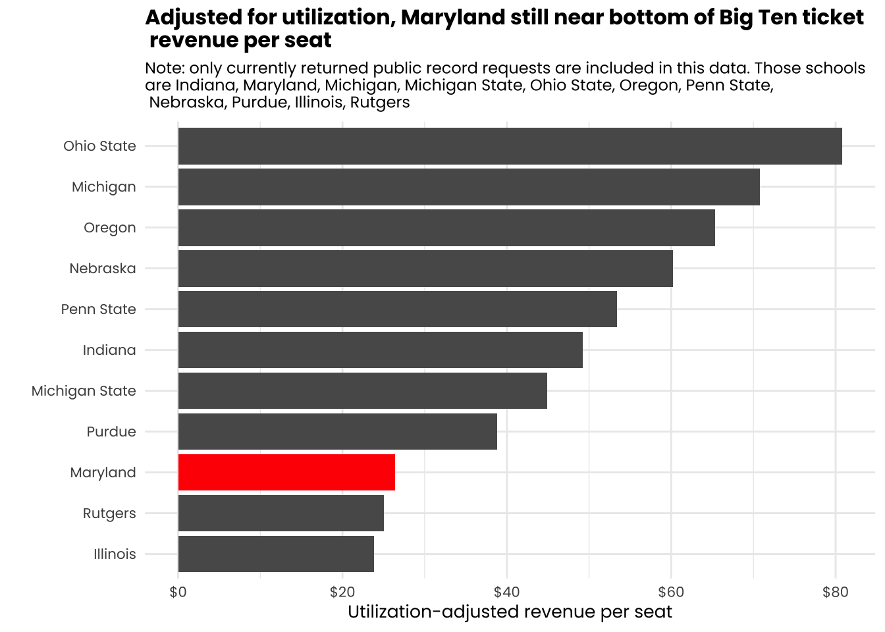
#Maryland spending: Recruiting and salaries
Coaches complain a lot about the resources they have, which will often mean the money they have to pay their assistant coaches/support staff (plus their own salary) as well as recruiting budget. This recruiting number is referring to travel costs and official visits and stuff. It’s not NIL or revenue sharing.
If there’s a complaint for Locksley about resources (similar to Kevin Willard before his departure as men’s basketball coach), it could be about the pool of money he has for his support staff. Maryland has the lowest amount spent on football support staff of any scool which responded to the public records request.
b1gwide |>select(school, year, support_staff_football) |>group_by(school) |>summarize(total_coach_salaries =sum(support_staff_football, na.rm =TRUE) ) |>ggplot() +geom_col(aes(x =reorder(school, total_coach_salaries), y = total_coach_salaries)) +geom_col(data =filter(b1gwide, school =="Maryland") |>select(school, year, support_staff_football) |>group_by(school) |>summarize(total_coach_salaries =sum(support_staff_football, na.rm =TRUE) ),aes(x = school, y = total_coach_salaries), fill ="red") +scale_y_continuous(labels = scales::label_dollar()) +coord_flip() +labs(title ="Maryland spending on football support staff is last in the Big Ten",subtitle ="Note: only currently returned public record requests are included in this data. Those schools\nare Indiana, Maryland, Michigan, Michigan State, Ohio State, Oregon, Penn State,\n Nebraska, Purdue, Illinois, Rutgers",x ="",y ="Total Football Coaching Staff Salaries") +theme_minimal() +theme(legend.position ="none",text =element_text(family ="poppins"),plot.title =element_text(size =12, face ="bold"),plot.subtitle =element_text(size =9),axis.title =element_text(size =10),axis.text =element_text(size =8) )
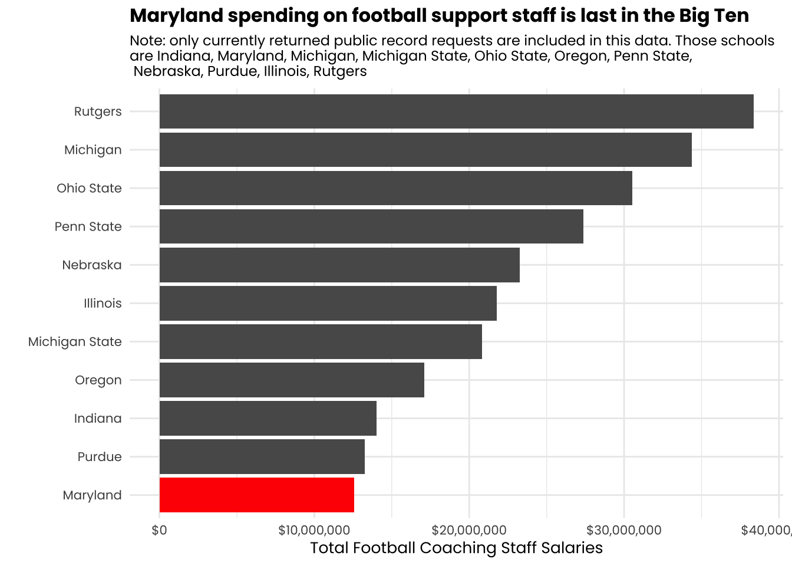
Rutgers is pumping a ton of money into its staff. And it is accomplishing….. what exactly?
It’s recruiting spending isn’t bad. But spending on recruiting doesn’t necessarily mean getting good players. Insert Rutgers.
b1gwide |>select(school, year, football_recruiting) |>group_by(school) |>summarize(total_coach_salaries =sum(football_recruiting, na.rm =TRUE) ) |>ggplot() +geom_col(aes(x =reorder(school, total_coach_salaries), y = total_coach_salaries)) +geom_col(data =filter(b1gwide, school =="Maryland") |>select(school, year, football_recruiting) |>group_by(school) |>summarize(total_coach_salaries =sum(football_recruiting, na.rm =TRUE) ),aes(x = school, y = total_coach_salaries), fill ="red") +scale_y_continuous(labels = scales::label_dollar()) +coord_flip() +labs(title ="Maryland among middle of Big Ten recruiting spenders,\n but lots of money doesn't equal great teams",subtitle ="Note: only currently returned public record requests are included in this data. Those schools\nare Indiana, Maryland, Michigan, Michigan State, Ohio State, Oregon, Penn State,\n Nebraska, Purdue, Illinois, Rutgers",x ="",y ="Total football recruiting expenses") +theme_minimal() +theme(legend.position ="none",text =element_text(family ="poppins"),plot.title =element_text(size =12, face ="bold"),plot.subtitle =element_text(size =9),axis.title =element_text(size =10),axis.text =element_text(size =8) )
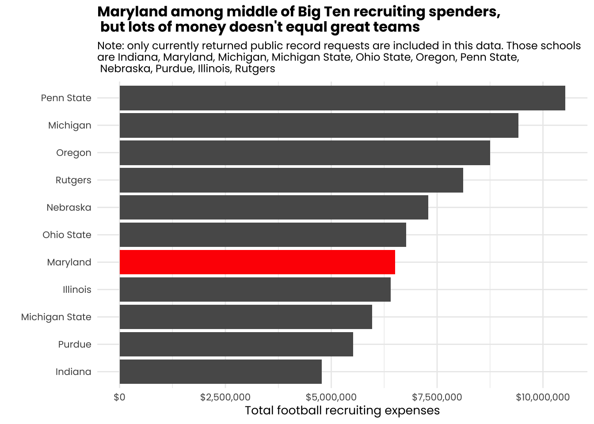
Much of Maryland’s spending on recruiting has come in fairly steady increases since the COVID-19 pandemic. And while Maryland has been consistent in boosting its expenditures, it isn’t happening at the same rate as its Big Ten competition.
b1gwide |>select(school, year, football_recruiting) |>mutate(color_group =ifelse(school =="Maryland", "Maryland", "Other")) |>ggplot(aes(x =factor(year), y = football_recruiting, group = school, color = color_group)) +geom_line(data =function(x) filter(x, school !="Maryland"), linewidth =1, alpha =0.7) +geom_line(data =function(x) filter(x, school =="Maryland"), linewidth =1.5) +scale_color_manual(values =c("Maryland"="red", "Other"="gray70")) +scale_y_continuous(labels = scales::label_dollar()) +labs(title ="Maryland, like its Big Ten counterparts, has increased\n recruiting spending since the pandemic",subtitle ="Maryland has not raised its spending at the same rate as other Big Ten schools, however.",x ="",y ="Ticket sales revenue") +theme_minimal() +theme(legend.position ="none",text =element_text(family ="poppins"),plot.title =element_text(size =12, face ="bold"),plot.subtitle =element_text(size =10),axis.title =element_text(size =10),axis.text =element_text(size =8)) +facet_wrap(~school)
Of course, none of this data includes other factors Smith is likely referring to when he says Maryland will increase his funding. This doesn’t include NIL and this doesn’t include revenue sharing. It will not be until the FY2026 reports that revenue sharing even shows up in school’s budgets. NIL happens outside the realm of the athletic department, and thus isn’t reported nor is subject to public record.
Existing reporting shows Maryland is likely behind in NIL, too. This year, Maryland football landed Zion Elee, a five-star rated recruit. He is the second-highest rated recruit in team history, per 247Sports.
But while Maryland will be looking to increase its NIL funds, it will also need to make improvements within its budgeting to get to the upper levels of the Big Ten, assuming that is its intention. Given the logical comparison between the two programs after being tied together for so long in the same division, comparing Indiana’s FY2025 report, when released, and Maryland’s will be an interesting metric given that it is the report where Indiana’s major jump in football will show up financially for the first time. Maryland could be compared to what was a very similar program just a few years ago and see what financial moves it made to become a relevant contender.
There also is a chicken/egg question in terms of raising revenue: Can Maryland increase sponsorship and ticket sales revenue if it isn’t putting out a good team? Or is the reason that Maryland isn’t putting out a good team because the NIL money has to come first to get the better players.
Or, lastly, do players not want to come to Maryland because there isn’t the same investment in sponsors in the program or fans in the stands as other options in the Big Ten.
All of the investment and financial support across the athletic department and NIL collective sides works together. Maryland will need improvements in all areas.